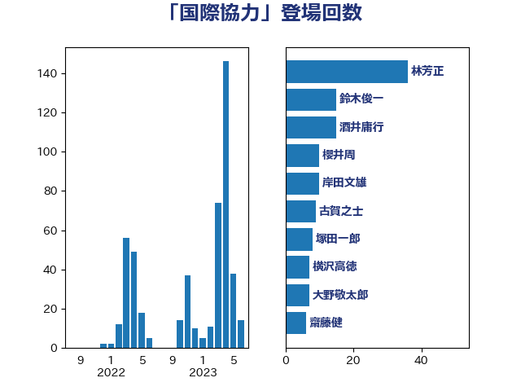

単語「国際協力」

| 林芳正 | 自由民主党 | 36 回 |
| 鈴木俊一 | 自由民主党 | 15 回 |
| 酒井庸行 | 自由民主党 | 15 回 |
| 櫻井周 | 立憲民主党 | 10 回 |
| 岸田文雄 | 自由民主党 | 10 回 |
| 古賀之士 | 立憲民主党 | 9 回 |
| 塚田一郎 | 自由民主党 | 8 回 |
| 横沢高徳 | 立憲民主党 | 7 回 |
| 大野敬太郎 | 自由民主党 | 7 回 |
| 齋藤健 | 自由民主党 | 6 回 |
| 青柳仁士 | 日本維新の会 | 6 回 |
| 鈴木貴子 | 自由民主党 | 6 回 |
| 金子道仁 | 日本維新の会 | 6 回 |
| 谷公一 | 自由民主党 | 6 回 |
| 上田清司 | 国民民主党 | 6 回 |
| 笠井亮 | 日本共産党 | 5 回 |
| 田村貴昭 | 日本共産党 | 5 回 |
| 岩渕友 | 日本共産党 | 5 回 |
| 城内実 | 自由民主党 | 5 回 |
| 佐藤正久 | 自由民主党 | 5 回 |
| 井上哲士 | 日本共産党 | 5 回 |
| 黄川田仁志 | 自由民主党 | 4 回 |
| 青山大人 | 立憲民主党 | 4 回 |
| 豊田俊郎 | 自由民主党 | 4 回 |
| 藤巻健太 | 日本維新の会 | 4 回 |
| 高橋光男 | 公明党 | 3 回 |
| 高木かおり | 日本維新の会 | 3 回 |
| 阿達雅志 | 自由民主党 | 3 回 |
| 羽田次郎 | 立憲民主党 | 3 回 |
| 細田博之 | 自由民主党 | 3 回 |
| 神田潤一 | 自由民主党 | 3 回 |
| 浜田靖一 | 自由民主党 | 3 回 |
| 浅野哲 | 国民民主党 | 3 回 |
| 櫛渕万里 | れいわ新選組 | 3 回 |
| 後藤茂之 | 自由民主党 | 3 回 |
| 山田賢司 | 自由民主党 | 3 回 |
| 山本博司 | 公明党 | 3 回 |
| 山岸一生 | 立憲民主党 | 3 回 |
| 尾身朝子 | 自由民主党 | 3 回 |
| 吉田宣弘 | 公明党 | 3 回 |
| 前原誠司 | 国民民主党 | 3 回 |
| 三原じゅん子 | 自由民主党 | 3 回 |
| 高良鉄美 | 無所属 | 2 回 |
| 高市早苗 | 自由民主党 | 2 回 |
| 西村明宏 | 自由民主党 | 2 回 |
| 葉梨康弘 | 自由民主党 | 2 回 |
| 緒方林太郎 | 無所属 | 2 回 |
| 穀田恵二 | 日本共産党 | 2 回 |
| 磯崎仁彦 | 自由民主党 | 2 回 |
| 石橋通宏 | 立憲民主党 | 2 回 |
| 猪口邦子 | 自由民主党 | 2 回 |
| 津島淳 | 自由民主党 | 2 回 |
| 江田憲司 | 立憲民主党 | 2 回 |
| 永岡桂子 | 自由民主党 | 2 回 |
| 根本匠 | 自由民主党 | 2 回 |
| 柴田巧 | 日本維新の会 | 2 回 |
| 柘植芳文 | 自由民主党 | 2 回 |
| 松野博一 | 自由民主党 | 2 回 |
| 松村祥史 | 自由民主党 | 2 回 |
| 松下新平 | 自由民主党 | 2 回 |
| 末松信介 | 自由民主党 | 2 回 |
| 平木大作 | 公明党 | 2 回 |
| 山添拓 | 日本共産党 | 2 回 |
| 山本太郎 | れいわ新選組 | 2 回 |
| 山口壯 | 自由民主党 | 2 回 |
| 尾辻秀久 | 無所属 | 2 回 |
| 國重徹 | 公明党 | 2 回 |
| 加藤勝信 | 自由民主党 | 2 回 |
| 佐藤信秋 | 自由民主党 | 2 回 |
| 住吉寛紀 | 日本維新の会 | 2 回 |
| 中村裕之 | 自由民主党 | 2 回 |
| 一谷勇一郎 | 日本維新の会 | 2 回 |
| 鰐淵洋子 | 公明党 | 1 回 |
| 鬼木誠 | 立憲民主党 | 1 回 |
| 高村正大 | 自由民主党 | 1 回 |
| 高木啓 | 自由民主党 | 1 回 |
| 青木一彦 | 自由民主党 | 1 回 |
| 阿部知子 | 立憲民主党 | 1 回 |
| 阿部司 | 日本維新の会 | 1 回 |
| 鈴木敦 | 国民民主党 | 1 回 |
| 金城泰邦 | 公明党 | 1 回 |
| 野田聖子 | 自由民主党 | 1 回 |
| 遠藤良太 | 日本維新の会 | 1 回 |
| 赤嶺政賢 | 日本共産党 | 1 回 |
| 谷合正明 | 公明党 | 1 回 |
| 西村康稔 | 自由民主党 | 1 回 |
| 蓮舫 | 立憲民主党 | 1 回 |
| 菊田真紀子 | 立憲民主党 | 1 回 |
| 芳賀道也 | 国民民主党 | 1 回 |
| 細田健一 | 自由民主党 | 1 回 |
| 米山隆一 | 立憲民主党 | 1 回 |
| 笠浩史 | 無所属 | 1 回 |
| 福島伸享 | 無所属 | 1 回 |
| 神谷宗幣 | 参政党 | 1 回 |
| 田島麻衣子 | 立憲民主党 | 1 回 |
| 猪瀬直樹 | 日本維新の会 | 1 回 |
| 片山大介 | 日本維新の会 | 1 回 |
| 源馬謙太郎 | 立憲民主党 | 1 回 |
| 永井学 | 自由民主党 | 1 回 |
| 水野素子 | 立憲民主党 | 1 回 |
| 武井俊輔 | 自由民主党 | 1 回 |
| 榛葉賀津也 | 国民民主党 | 1 回 |
| 梅村聡 | 日本維新の会 | 1 回 |
| 柳ヶ瀬裕文 | 日本維新の会 | 1 回 |
| 松野明美 | 日本維新の会 | 1 回 |
| 松沢成文 | 日本維新の会 | 1 回 |
| 松本尚 | 自由民主党 | 1 回 |
| 松本剛明 | 自由民主党 | 1 回 |
| 東徹 | 日本維新の会 | 1 回 |
| 本田顕子 | 自由民主党 | 1 回 |
| 木村次郎 | 自由民主党 | 1 回 |
| 朝日健太郎 | 自由民主党 | 1 回 |
| 打越さく良 | 立憲民主党 | 1 回 |
| 平山佐知子 | 無所属 | 1 回 |
| 平将明 | 自由民主党 | 1 回 |
| 市村浩一郎 | 日本維新の会 | 1 回 |
| 岩谷良平 | 日本維新の会 | 1 回 |
| 山田美樹 | 自由民主党 | 1 回 |
| 山口晋 | 自由民主党 | 1 回 |
| 小野泰輔 | 日本維新の会 | 1 回 |
| 小西洋之 | 立憲民主党 | 1 回 |
| 宮崎雅夫 | 自由民主党 | 1 回 |
| 宮口治子 | 立憲民主党 | 1 回 |
| 天畠大輔 | れいわ新選組 | 1 回 |
| 大塚拓 | 自由民主党 | 1 回 |
| 堀場幸子 | 日本維新の会 | 1 回 |
| 嘉田由紀子 | 無所属 | 1 回 |
| 吉川ゆうみ | 自由民主党 | 1 回 |
| 勝部賢志 | 立憲民主党 | 1 回 |
| 務台俊介 | 自由民主党 | 1 回 |
| 中野英幸 | 自由民主党 | 1 回 |
| 中川郁子 | 自由民主党 | 1 回 |
| 中川康洋 | 公明党 | 1 回 |
| 上田勇 | 公明党 | 1 回 |